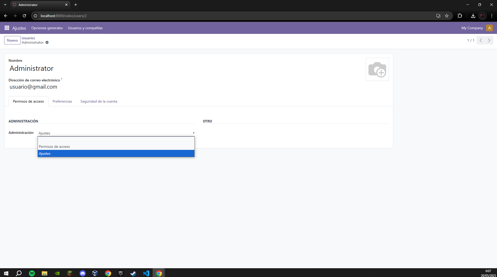
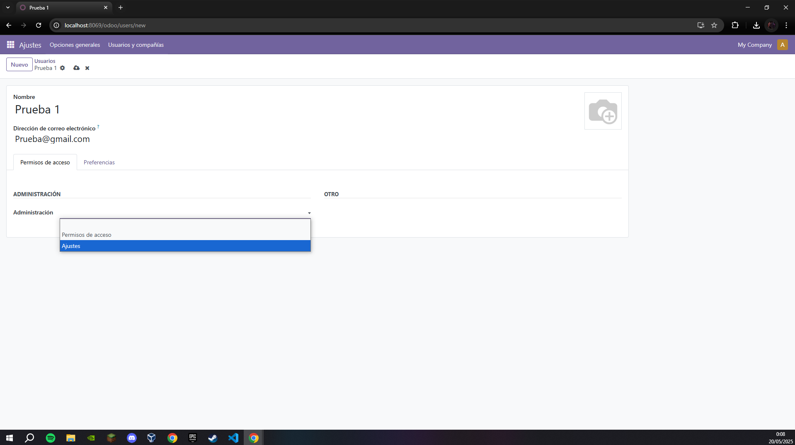
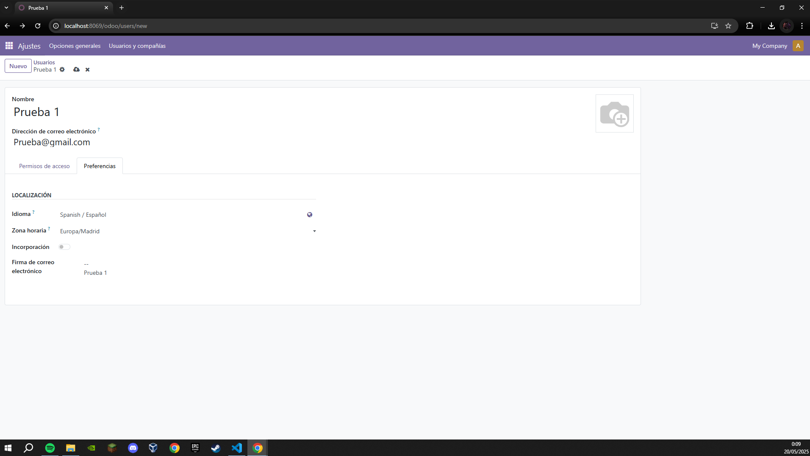
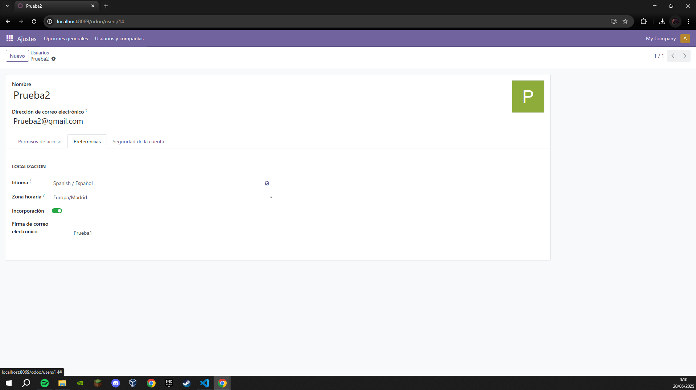
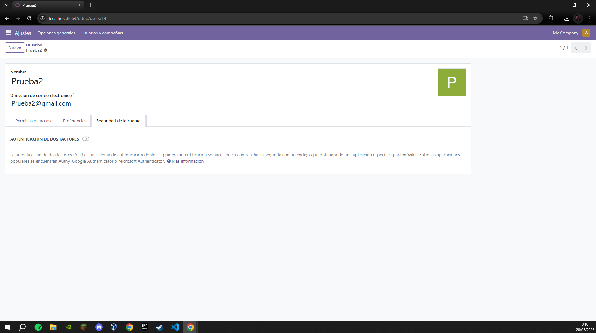
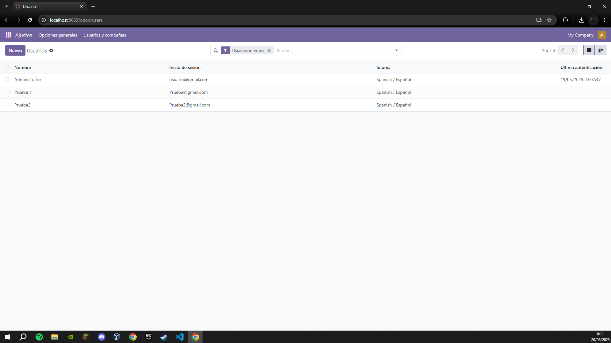
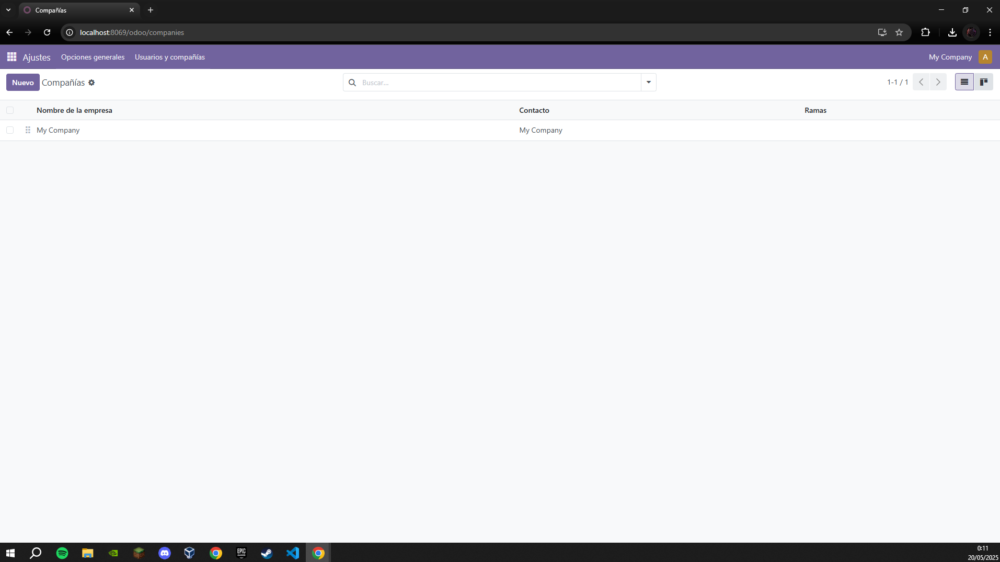
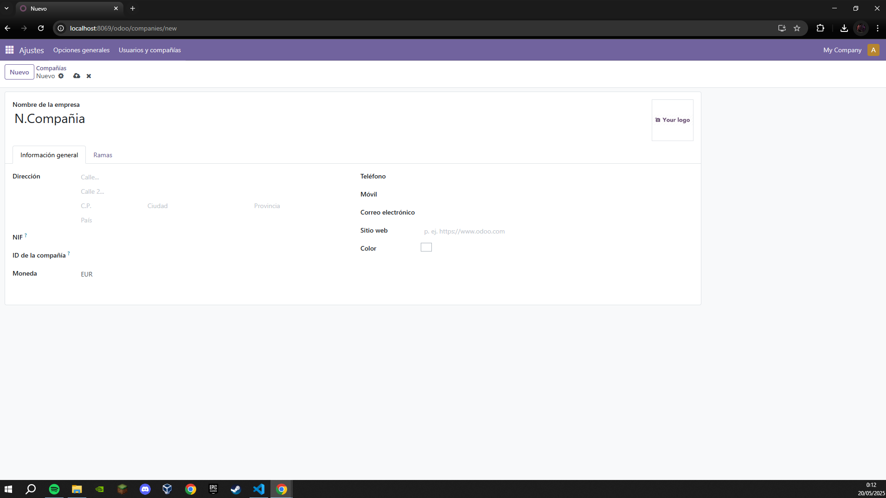
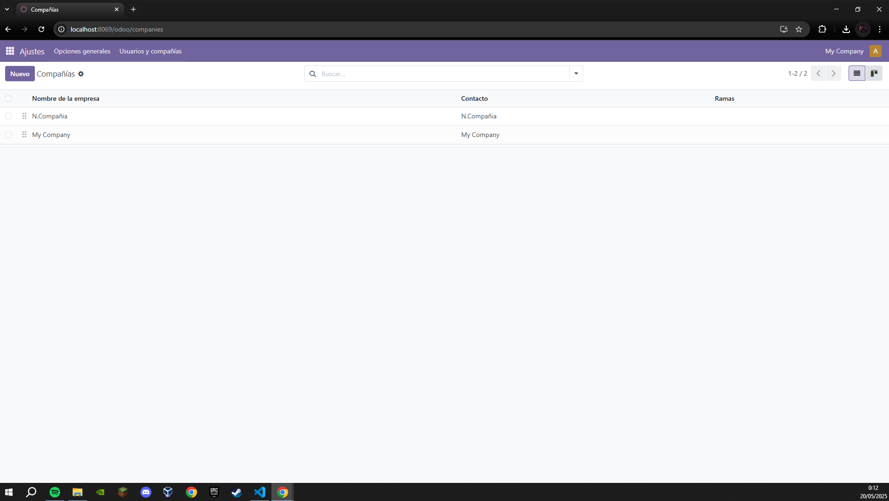

Acceso seguro
Odoo tiene uin sistema de acceso super rapido y super simple.
A parte de explicar la opcion que tiene de acceso seguro, tambien crearemos un par de usuarios y una nueva compañia
Esta es la parte de usuario, le vamos a dar a nuevo y empezaremos a ver como y que tiene un usuario en Odoo

Primero de todo, este es nuestro usuario Administrador, con este usuario tenemos total acceso a la configuracion al sistema Odoo.
Podemos observar que las opciones de acceso que nos da son simplemente dos, permisos de acceso; esta lo unico que te permite es acceder a Odoo sin posibilidad
de modificar nada mientras que la otra opcion; ajustes, te permite acceder a Odoo con libre acceso y poder modificar lo que nosotros queramos desde activar/instalar apps
controlar los ajustes de los usuarios y las compañias; basicamente, un Administrador
    
Aqui configuramos dos usuarios llamados, Prueba1 y Pueba2.
En los usuarios podemos tocar los permisos, luego en el apartado de preferencias tenemos el idioma, la zona horaria, la incorporacion y la firma electronica.
Si activamos la incorporacion se nos despliega otra ventana mas llamada seguridad de la cuenta dojnde activamos la verificacion por dos pasos, la primera por contraseña y
la segunda mediante un codigo.
  
En la parte de compañias es mucho mas sencillo, aqui solo nos deja modificar la direccion donde se encuentra nuestra compañia, el NIF, el ID de la compañia las moneda que utiliza esta misma y para ponernios en contacto en algun momento como telefono, movil, correo electronico, el sitio web que tiene e incluso el color con el que queremos guardar dicha compañia